Lifeline · 4th great-grandfather (Nancy's father)
Thomas James
Born about 1794Documented (as sworn); the year is Unresolved
"my age is 83 years," sworn 26 Apr 1877 (claim 7105); the family book says c1792; the 1830 census mark is under 40 to 49
Died by 16 Jul 1878Documented (as transcribed)
His heirs are listed by his son David on 16 Jul 1878; David appointed administrator 31 Jul 1878 (family book p175, as transcribed).
- bornPendleton District, South Carolina (claim 7105)
- 1813 to 1815served from Franklin County, Tennessee (claim 7105)
- 1815married in Franklin County, Tennessee (reconstructed list; Strongly supported as him)
- from 1822 [last digit uncertain]Jefferson County, Alabama (claim 7105). Earliest land: E½ SE¼ Sec. 17, T15S R3W, patent 20 Jun 1825 (index)
- 1825 to 1850land in T15S R3W Secs. 17, 20 and 6 (BLM patent index)
- 1861 to 1865"about 21 miles North West [reading uncertain] of Elyton"; about 400 acres; a creek field by the house and a "River field" about a mile and a half off (claim 7105)
- March 1865Wilson's cavalry camped "about 2 miles from my house at or near William Graham's on the public road leading from Jasper in Walker County to Elyton" (claim 7105)
Parents not known. Born in Pendleton District, South Carolina (his own sworn words). Husband of Sarah (family book: born c1794 S.C.; "Sarah Childers" on a reconstructed Franklin County, Tennessee marriage list), and later of Alipha Warren (family book).
- Married to
- Sarah James about 1794 to not known
- Children
- Nancy Ann James Graham 5 Mar 1825 to 7 Jul 1911
As written in the records: Thomas (his mark) James (his depositions, claim 7105, 1877) · Thomas James (petition, 1871, signed in another hand) · Thomas JAMES (Franklin County, Tennessee reconstructed marriages, 1815) · THOMAS JAMES (BLM patent index, 1825 to 1850)
Dates and ages
- Fights in the battle at Talladega (the battle was fought 9 Nov 1813)Claim 7105, his deposition, answer 51 (image 00083); the battle date is general historyDocumented (his sworn words)about, between19 years, 6 months, 14 daysand20 years, 6 months, 13 days
- Fights "through the battle at New Orleans" under Jackson (the main battle was 8 Jan 1815)Claim 7105, answer 51; the battle date is general historyDocumented (his sworn words)about, between20 years, 8 months, 13 daysand21 years, 8 months, 12 days
- Marries Sarah Childers, Franklin County, Tennessee (15 Jun 1815)Franklin County reconstructed marriages (tngenweb.org/franklin, no source given)Strongly supported (him); Plausible (her surname)about, between21 years, 1 month, 20 daysand22 years, 1 month, 19 days
- Patent, E½ SE¼ Sec. 17, T15S R3W (20 Jun 1825)BLM patent index, doc. 3869Documented (index)about, between31 years, 1 month, 25 daysand32 years, 1 month, 24 days
- 1830 census (census day 1 June)1830 census, Jefferson Co., page stamped 25 (image, read by column)Documentedabout, between36 years, 1 month, 6 daysand37 years, 1 month, 5 daysAge as recorded: man 40 to 49
- Enters the N½ NW¼ Sec. 17 (3 Nov 1834, family book); patent 20 Mar 1837BLM patent index, doc. 11618; family book p131Documented (index)about, between42 years, 10 months, 22 daysand43 years, 10 months, 21 days
- Appointed justice of the peace (Feb 1836, family book)Family book p131, no source givenPlausible (family book only)about, between41 years, 9 months, 6 daysand42 years, 10 months, 2 days
- Patents, NE¼ NE¼ Sec. 20 and NW¼ NE¼ Sec. 17 (20 Sep 1839)BLM patent index, docs. 19940 and 21297Documented (index)about, between45 years, 4 months, 25 daysand46 years, 4 months, 24 days
- 1860 farm census, line 21: 50 improved and 385 unimproved acres, farm worth $500 (18 Jun 1860)1860 agricultural schedule, Kendalville Precinct, p9 (image)Strongly supported (name match on the family's page; the acreage fits his 1877 "about 400 acres")about, between66 years, 1 month, 23 daysand67 years, 1 month, 22 days
- Votes for Bell and Everett (November 1860; election day 6 Nov 1860)Claim 7105, answer 12Documented (his sworn words)about, between66 years, 6 months, 11 daysand67 years, 6 months, 10 days
- Marries Alipha Warren, Jefferson County (21 Feb 1863, family book)Family book p131; the 1878 estate lists "Widow, Alis James"Plausible (family book)about, between68 years, 9 months, 26 daysand69 years, 9 months, 25 days
- Arrested by "Capt. Tapp's [?]" Confederate cavalry for two or three hours (summer 1864, taken here as 1 Jun to 31 Aug)Claim 7105, answers 19 and 20Documented (his sworn words)about, between70 years, 1 month, 6 daysand71 years, 4 months, 4 days
- Wilson's cavalry takes his mare, corn, bacon and fodder ("on or about the 28 of March 1865"; the petition says the 27th or 28th, his daughter Louisa "the last day of March")Claim 7105, images 00068, 00092 to 00097Documentedabout, between70 years, 11 months, 1 dayand71 years, 11 months, 4 days
- Takes the amnesty oath "after the close of the war in 1865" (taken here as 1 May to 31 Dec 1865)Claim 7105, answer 39Documented (his sworn words)about, between71 years, 0 months, 5 daysand72 years, 8 months, 4 days
- A federal pensioner "since Feby 1871" (certificate 15751)Claim 7105, answer 51; the Special Commissioner saw the certificateDocumentedabout, between76 years, 9 months, 6 daysand77 years, 10 months, 1 day
- Swears to his petition at Elyton (25 Aug 1871)Claim 7105, image 00070Documentedabout, between77 years, 3 months, 30 daysand78 years, 3 months, 29 days
- Deposition at Elyton before Special Commissioner James Thompson (26 Apr 1877)Claim 7105, image 00079Documentedabout, between83 years, 0 months, 0 daysand83 years, 11 months, 30 daysAge as recorded: 83
- Congress allows $444 in full, Private Act No. 141 (15 Jun 1878)Claim 7105, image 00112Documentedabout, between84 years, 1 month, 20 daysand85 years, 1 month, 19 days
- Dead by 16 Jul 1878: son David lists the heirs; administrator 31 Jul 1878Family book p175 (as transcribed)Documented (as transcribed)about, between84 years, 2 months, 20 daysand85 years, 2 months, 19 days
How each age is worked out
- Fights in the battle at Talladega (the battle was fought 9 Nov 1813)latest possible birth 26 Apr 1794 to 9 Nov 1813 is 19 years, 6 months, 14 days; earliest possible birth 27 Apr 1793 to 9 Nov 1813 is 20 years, 6 months, 13 days
- Fights "through the battle at New Orleans" under Jackson (the main battle was 8 Jan 1815)latest possible birth 26 Apr 1794 to 8 Jan 1815 is 20 years, 8 months, 13 days; earliest possible birth 27 Apr 1793 to 8 Jan 1815 is 21 years, 8 months, 12 days
- Marries Sarah Childers, Franklin County, Tennessee (15 Jun 1815)latest possible birth 26 Apr 1794 to 15 Jun 1815 is 21 years, 1 month, 20 days; earliest possible birth 27 Apr 1793 to 15 Jun 1815 is 22 years, 1 month, 19 days
- Patent, E½ SE¼ Sec. 17, T15S R3W (20 Jun 1825)latest possible birth 26 Apr 1794 to 20 Jun 1825 is 31 years, 1 month, 25 days; earliest possible birth 27 Apr 1793 to 20 Jun 1825 is 32 years, 1 month, 24 days
- 1830 census (census day 1 June)latest possible birth 26 Apr 1794 to 1 Jun 1830 is 36 years, 1 month, 6 days; earliest possible birth 27 Apr 1793 to 1 Jun 1830 is 37 years, 1 month, 5 days
- Enters the N½ NW¼ Sec. 17 (3 Nov 1834, family book); patent 20 Mar 1837latest possible birth 26 Apr 1794 to 20 Mar 1837 is 42 years, 10 months, 22 days; earliest possible birth 27 Apr 1793 to 20 Mar 1837 is 43 years, 10 months, 21 days
- Appointed justice of the peace (Feb 1836, family book)latest possible birth 26 Apr 1794 to 1 Feb 1836 is 41 years, 9 months, 6 days; earliest possible birth 27 Apr 1793 to 29 Feb 1836 is 42 years, 10 months, 2 days
- Patents, NE¼ NE¼ Sec. 20 and NW¼ NE¼ Sec. 17 (20 Sep 1839)latest possible birth 26 Apr 1794 to 20 Sep 1839 is 45 years, 4 months, 25 days; earliest possible birth 27 Apr 1793 to 20 Sep 1839 is 46 years, 4 months, 24 days
- 1860 farm census, line 21: 50 improved and 385 unimproved acres, farm worth $500 (18 Jun 1860)latest possible birth 26 Apr 1794 to 18 Jun 1860 is 66 years, 1 month, 23 days; earliest possible birth 27 Apr 1793 to 18 Jun 1860 is 67 years, 1 month, 22 days
- Votes for Bell and Everett (November 1860; election day 6 Nov 1860)latest possible birth 26 Apr 1794 to 6 Nov 1860 is 66 years, 6 months, 11 days; earliest possible birth 27 Apr 1793 to 6 Nov 1860 is 67 years, 6 months, 10 days
- Marries Alipha Warren, Jefferson County (21 Feb 1863, family book)latest possible birth 26 Apr 1794 to 21 Feb 1863 is 68 years, 9 months, 26 days; earliest possible birth 27 Apr 1793 to 21 Feb 1863 is 69 years, 9 months, 25 days
- Arrested by "Capt. Tapp's [?]" Confederate cavalry for two or three hours (summer 1864, taken here as 1 Jun to 31 Aug)latest possible birth 26 Apr 1794 to 1 Jun 1864 is 70 years, 1 month, 6 days; earliest possible birth 27 Apr 1793 to 31 Aug 1864 is 71 years, 4 months, 4 days
- Wilson's cavalry takes his mare, corn, bacon and fodder ("on or about the 28 of March 1865"; the petition says the 27th or 28th, his daughter Louisa "the last day of March")latest possible birth 26 Apr 1794 to 27 Mar 1865 is 70 years, 11 months, 1 day; earliest possible birth 27 Apr 1793 to 31 Mar 1865 is 71 years, 11 months, 4 days
- Takes the amnesty oath "after the close of the war in 1865" (taken here as 1 May to 31 Dec 1865)latest possible birth 26 Apr 1794 to 1 May 1865 is 71 years, 0 months, 5 days; earliest possible birth 27 Apr 1793 to 31 Dec 1865 is 72 years, 8 months, 4 days
- A federal pensioner "since Feby 1871" (certificate 15751)latest possible birth 26 Apr 1794 to 1 Feb 1871 is 76 years, 9 months, 6 days; earliest possible birth 27 Apr 1793 to 28 Feb 1871 is 77 years, 10 months, 1 day
- Swears to his petition at Elyton (25 Aug 1871)latest possible birth 26 Apr 1794 to 25 Aug 1871 is 77 years, 3 months, 30 days; earliest possible birth 27 Apr 1793 to 25 Aug 1871 is 78 years, 3 months, 29 days
- Deposition at Elyton before Special Commissioner James Thompson (26 Apr 1877)latest possible birth 26 Apr 1794 to 26 Apr 1877 is 83 years, 0 months, 0 days; earliest possible birth 27 Apr 1793 to 26 Apr 1877 is 83 years, 11 months, 30 days
- Congress allows $444 in full, Private Act No. 141 (15 Jun 1878)latest possible birth 26 Apr 1794 to 15 Jun 1878 is 84 years, 1 month, 20 days; earliest possible birth 27 Apr 1793 to 15 Jun 1878 is 85 years, 1 month, 19 days
- Dead by 16 Jul 1878: son David lists the heirs; administrator 31 Jul 1878latest possible birth 26 Apr 1794 to 16 Jul 1878 is 84 years, 2 months, 20 days; earliest possible birth 27 Apr 1793 to 16 Jul 1878 is 85 years, 2 months, 19 days
Calendar method: whole years, then whole months, then days, counted from the birth date. Never rounded. Where the record gives only a month or a season, or the birth is known only as a range, both ends are shown.
What the records say
Census and farm records1
- His age: 83 in April 1877 (about 1794); c1792 in the family book; the 1830 census mark is in the 40 to 49 column (born 1780 to 1790). Not settled.Claim 7105; family book p131; 1830 census p25Unresolved
Conscription and death1
- Where they camped that night: "about 2 miles from my house ... at or near William Graham's on the public road leading from Jasper in Walker County to Elyton." His daughters Louisa Wedgeworth and Elizabeth Reid swore the same. William Graham's own claim says the camp was not near his house.Claim 7105, answer 77; claim 7099 (as transcribed)Documented (two sworn accounts disagree)
Other records13
- His War of 1812 service, in his own words (answer 51): "I was a volunteer in the war against the Indians in 1812 or 1813. I was in the battle fought at Talladega Ala. I was in Captain Barbry [?] Collins Company from Franklin County Tennessee. ... I think the General's name was Carroll, but it has been so long that I have forgotten. I was out for 3 months, and was honorably discharged near Columbus Mississippi." About six months later he "reenlisted to go to New Orleans and fight the British" in Captain Carpenter's company, "under General Jackson," and "was present and fought through the battle at New Orleans," discharged in 1815.Claim 7105, images 00083 and 00084 (image 00083 re-read 22 Nov 2026)Documented
- He gave his discharges to "a gentleman to get my pay" and never got them back. He received a land warrant "for one hundred and sixty" acres, and a pension from Feb 1871. The clerk noted: "The claimant has presented his pension certificate which is numbered as stated, 15751."Claim 7105, answer 51Documented
- 1860: "I voted for Bell and Everett ... and I voted for William S. Earnest the Union candidate for the Convention."Claim 7105, answer 12Documented
- Summer 1864: arrested by "Capt. Tapp's [?] rebel cavalry as they said for being a Union man and a spy against the Confederacy. They said that they intended to carry me to head quarters at Talladega." Released after two or three hours. About 100 of them camped at his house "one night and a part of one day" and fed his corn and fodder; Confederate cavalry also took "one of my best mules."Claim 7105, answers 19 and 20Documented
- He swore he fed Union men hiding out, among them Wesley Rowe and Frank and James Brooks. Francis M. Hancock (Sarah Graham's husband) swore he saw him feed "me and Henry Graham, Luke Nail, William Manning and Billy Grimes [reading uncertain]" in the fall and winter of 1864 to 1865.Claim 7105, answer 8; Hancock's deposition, answer 57Documented
- His sons in the war (answer 36): John "volunteered ... he was 22 years old ... He died soon after he entered the service." Thomas and David were conscripted and deserted; Thomas "went North and I have never heard of him since"; David "came home and layed out in the woods till the war closed."Claim 7105, answer 36Documented
- His son-in-law Jonathan Reid volunteered in the Union army and died in it; Jonathan's widow Elizabeth, Thomas's daughter, 58, of Arkansas County, Arkansas, was applying for a pension in 1877.Claim 7105, answer 9; Elizabeth Reid's depositionDocumented
- His farm in 1864: "I owned about 400 acres of Land. I had cleared about 50 acres." About 40 acres in corn on "good Creek and River bottom Land," about 8 in wheat. "I worked 5 hands, run 2 Plows and 3 worked with the hoe." Six "large fat hogs" killed the winter before.Claim 7105, answers 67 and 79Documented
- March 1865: the soldiers came "about noon or dinner time," led the roan mare out of the lot, "tore off the roof" of the corn crib and threw off logs, cut the bacon down in the smokehouse, and threw the fodder out of the "thrasher loft." The captain said "he had orders to take all such property for the use of the army" and left "about 10 bushels of Corn in my Crib." The officer said he had "over four hundred men." No receipt was given.Claim 7105, answers 74, 75 and 79Documented
- The Commissioners: "Claimant is over eighty three years of age. He is a pensioner of the Government for service in the War of 1812. He swears to loyal sympathies and to harboring Union men." They allowed the full $444: mare $100, 300 bushels of corn $300, 200 pounds of bacon $40, 200 bundles of fodder $4.Claim 7105, images 00065 and 00066Documented
- The Special Commissioner certified that "the claimant and witnesses are all well known to me and that they are good citizens and credible persons."Claim 7105, image 00107Documented
- His estate: about $444 less fees; "$330.00 Cash from US Government"; eight heirs signed for $20 each at Elyton on 14 Sep 1878, among them "Nancy (X) Grimes."Family book pp175 to 176 (as transcribed)Documented (as transcribed)
- Literacy: signed his depositions by mark.Claim 7105Documented
Household as recordedages as recorded
| man (head) | 40 to 49 | |
| woman | 30 to 39 | |
| boy | 10 to 14 | |
| boys (2) | under 5 | |
| girls (2) | 10 to 14 | |
| girl | 5 to 9 | |
| girls (2) | under 5 |
Children (family book pp131 to 133 and the 1878 estate; John from claim 7105 only)
Isaac (c1818 (family book)), Tabitha (Reed) (c1820 (family book; 34 in 1850)), Elizabeth (Belcher, then Reed) (58 in April 1877), Mary A. "Polly" (Nail) (c1824 (family book)), Nancy Ann (Graham) (5 Mar 1825), Louisa V. (Wedgeworth) (55 or 56 in April 1877), Thomas Jr. (married Lucretia Graham, 1850) (not given), Sarah Catherine (Nail) (c1832 (family book)), Dolly (Manning) (c1834 (family book)), Levi C. (c1835 (family book)), David J. (not given; "about 25" when conscripted (claim)), John (not given; volunteered at 22 and died in Confederate service (claim 7105 only))
Open questions and missing documents
- His War of 1812 pension and bounty land files (certificate 15751): his wife's name, the marriage, both companies Fold3, War of 1812 pension files (free); National Archives (TO GATHER 3.2)
- The companies: "Barbry [?] Collins" and Captain Carpenter Tennessee muster rolls (TSLA; Sistler, Tennesseans in the War of 1812)
- His birth year: 1792, 1794 or 1780 to 1790 Pension file; the 1850 (family 7), 1860 (p675) and 1870 (family 289) population pages the family book cites, none yet read
- When he came: "1822" (last digit uncertain) against a patent of 20 Jun 1825 GLO entry papers for doc. 3869; the tract book page for Sec. 17
- His son Thomas: is the son who "went North" the same Thomas James Jr. who married Lucretia Graham in 1850 and whose heirs inherit in 1878? Confederate service records; Lucretia in 1860 and 1870
- His son John (claim only): his unit and death Confederate service records, Alabama
- "Capt. Tapp's [?]" cavalry: the reading and the unit Re-read the image; Confederate cavalry rosters, north Alabama 1864
- Sarah's surname, death and burial; the 1863 marriage to Alipha Warren Pension file; Jefferson County marriage book 1863
- His death date and burial Probate original, Jefferson County (estate opened July 1878)
- His parents in Pendleton District, South Carolina Not yet searched
Documents
Click an image to read it here. Scans are web copies; the originals are in the family folder.
Claims49
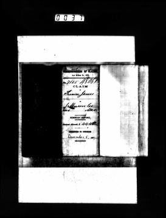
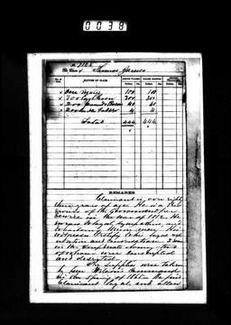
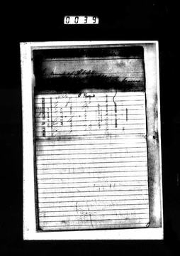
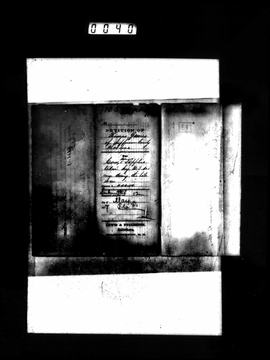
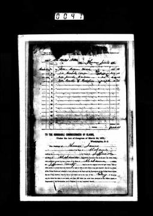
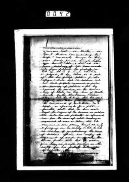
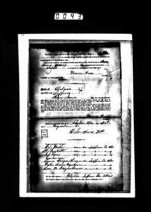
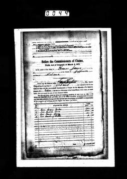
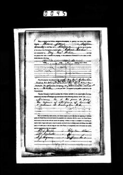
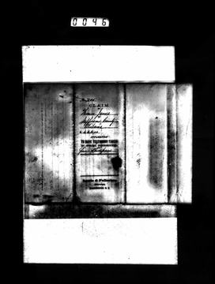
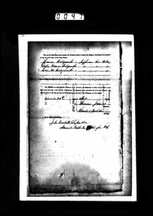
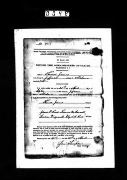
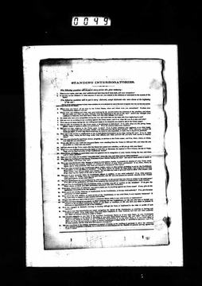
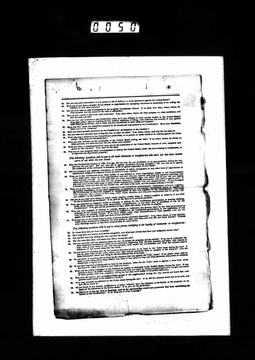
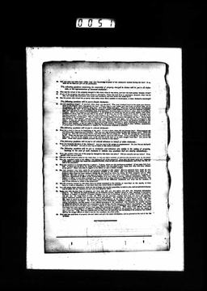
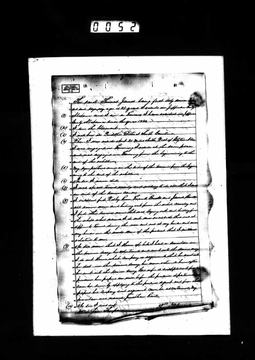
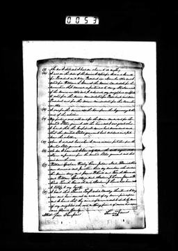
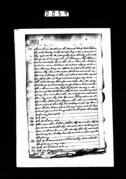
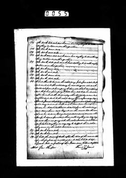
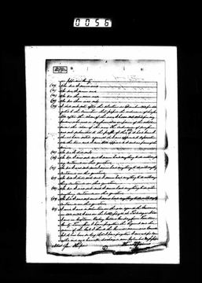
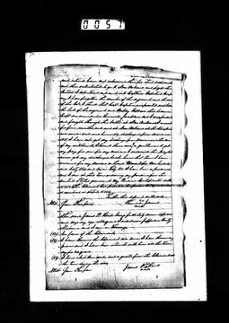
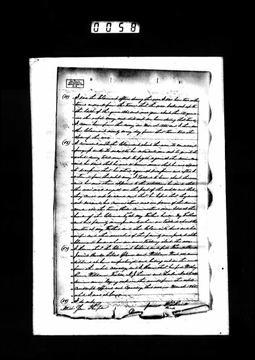
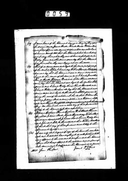
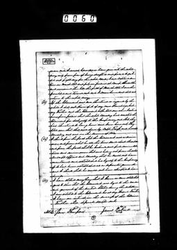
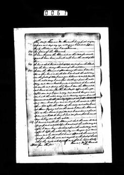
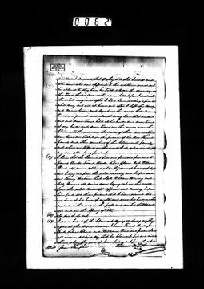
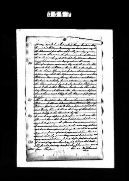
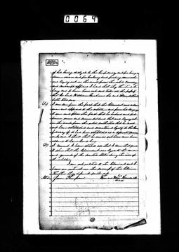
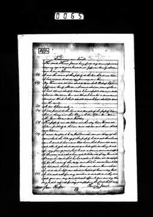
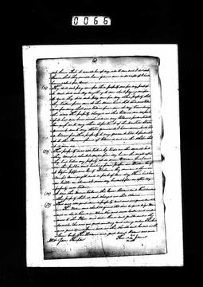
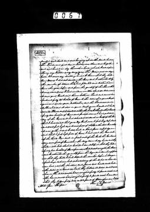
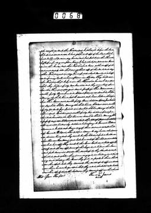
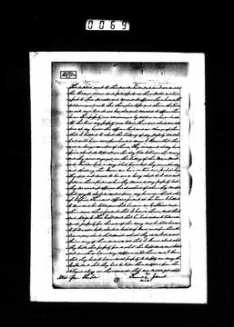
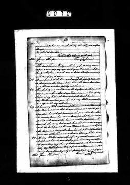
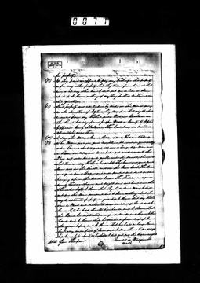
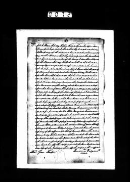
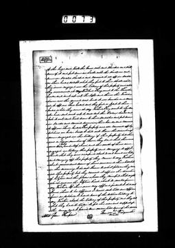
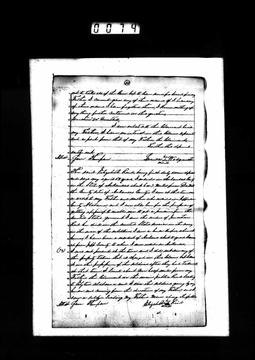
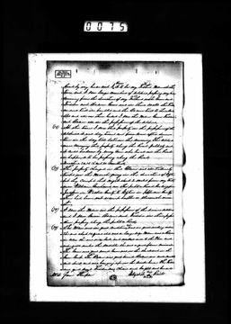
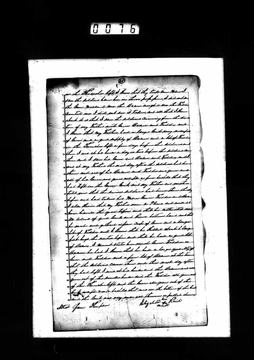
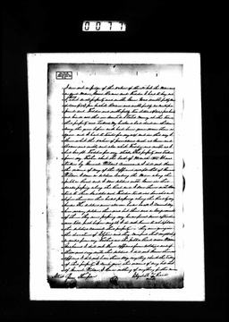
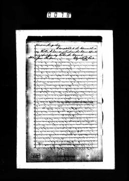
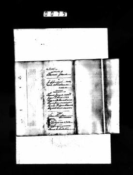
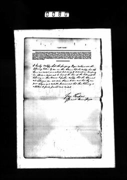
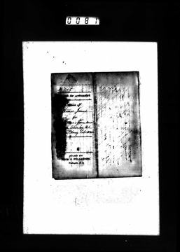
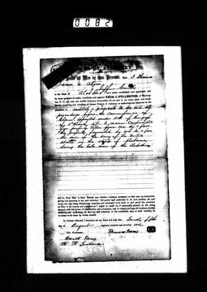
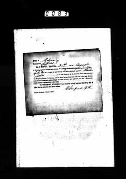
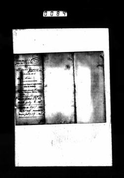
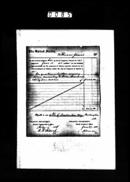


The years around this life
How to read the turnings, and where they come from
Two American authors, William Strauss and Neil Howe, proposed that American history moves in cycles of about 80 to 85 years. Each cycle has four "turnings" of about 21 years, and people born in the same stretch form a "generation" with one of four archetypes. The idea is in their books Generations (1991) and The Fourth Turning (1997).
- High. Institutions are strong and individualism is weak.
- Awakening. Institutions are attacked and individualism rises.
- Unraveling. Institutions are weak and distrusted, and individualism is strong.
- Crisis. Institutions are rebuilt and individualism declines.
- Prophet. Born in a High, comes of age in an Awakening.
- Nomad. Born in an Awakening, comes of age in an Unraveling.
- Hero. Born in an Unraveling, comes of age in a Crisis.
- Artist. Born in a Crisis, comes of age in a High.
What it is not. It is a theory, not a record and not a measurement. Many historians do not accept it as science. Critics say it is too vague to be proven wrong, and that it fits a pattern onto events after the fact. It was built on American history from 1584, with an Anglo-American focus. The authors say similar cycles show up in other developed countries; I have not checked that, and it may not fit histories outside the West. The turning dates and the generation names on these pages are theirs. They say nothing about any one person in the family, and nothing on this page claims a person had a trait because of the year they were born.
Why it is here. Grouping the years helps me see a life next to its time. The names are theirs, and I like them.
Read more: the books, at Open Library (the primary source) · Strauss–Howe generational theory, on Wikipedia, which also lists the criticism with its sources.
Revolutionary Crisis, 1773 to 1794
In their own records
- Nothing dated in these years on this sheet.
History in these years (period context, not about this person)
- No items in the history list for these years yet.
Conjunctions and oppositions in these years (a clockface, not a cause)
- Uranus-Pluto opposition, exact 5 times: 1792-09-19 (21° Leo / 21° Aquarius); 1793-01-21 (22° Leo / 22° Aquarius); 1793-08-13 (23° Leo / 23° Aquarius); 1794-03-14 (25° Leo / 25° Aquarius); 1794-07-04 (26° Leo / 26° Aquarius)
Era of Good Feelings High, 1794 to 1822
In their own records
- 1813-11-09 Fights in the battle at Talladega (the battle was fought 9 Nov 1813) Claim 7105, his deposition, answer 51 (image 00083); the battle date is general historyDocumented (his sworn words)
- 1815-01-08 Fights "through the battle at New Orleans" under Jackson (the main battle was 8 Jan 1815) Claim 7105, answer 51; the battle date is general historyDocumented (his sworn words)
- 1815-06-15 Marries Sarah Childers, Franklin County, Tennessee (15 Jun 1815) Franklin County reconstructed marriages (tngenweb.org/franklin, no source given)Strongly supported (him); Plausible (her surname)
In the family's records
- 1820-01-30 William Graham and Rebecca Staggs marry, six weeks after Jefferson County was created (licence 29 Jan 1820) Marriage licence no. 87Documented
History in these years (period context, not about this person)
- 1794-03-14 Eli Whitney granted the cotton gin patent national; Wikipedia, Cotton gin
- 1798-04-07 Mississippi Territory organized from land ceded by Georgia (later Alabama and Mississippi) alabama; Wikipedia, Mississippi Territory
- 1803-04-30 Louisiana Purchase treaty signed ($15 million) national; Wikipedia, Louisiana Purchase
- 1805 Georgia's first land lottery (lotteries ran 1805 to 1833) national; Wikipedia, Georgia land lotteries
- 1812-06-18 to 1815-02-17 War of 1812 national; Wikipedia, War of 1812 (infobox)
- 1813-07-22 to 1814-08-09 Creek War alabama; Wikipedia, Creek War (infobox)
- 1813-11-09 Battle of Talladega alabama; Wikipedia, Creek War
- 1814-03-27 Battle of Horseshoe Bend alabama; Wikipedia, Creek War
- 1814-08-09 Treaty of Fort Jackson: the Creek Nation cedes more than 21 million acres alabama; Wikipedia, Creek War (the page gives 21 and 22 million in different places)
- 1815-01-08 Battle of New Orleans national; Wikipedia, Battle of New Orleans
- 1817-03-03 Congress passes the act creating Alabama Territory (in effect 10 Oct 1817) alabama; Wikipedia, Alabama Territory (the page also gives 15 Aug and 10 Dec 1817)
- 1819 to 1821 Panic of 1819 national; Wikipedia, Panic of 1819 (years only)
- 1819-12-13 Jefferson County created; Carrollsville the first county seat local; Encyclopedia of Alabama, Jefferson County
- 1819-12-14 Alabama admitted as the 22nd state alabama; Wikipedia, Alabama Territory
- 1820-07-01 Land Act of 1820 in effect: federal land $1.25 an acre, cash only national; Wikipedia, Land Act of 1820
- 1821 County seat moves to Elyton (until 1873) local; Encyclopedia of Alabama, Jefferson County
Conjunctions and oppositions in these years (a clockface, not a cause)
- Uranus-Pluto opposition, exact 5 times: 1792-09-19 (21° Leo / 21° Aquarius); 1793-01-21 (22° Leo / 22° Aquarius); 1793-08-13 (23° Leo / 23° Aquarius); 1794-03-14 (25° Leo / 25° Aquarius); 1794-07-04 (26° Leo / 26° Aquarius)
- ✦ Saturn-Pluto opposition, exact 3 times: 1801-10-13 (3° Virgo / 3° Pisces); 1802-02-12 (4° Virgo / 4° Pisces); 1802-07-31 (6° Virgo / 6° Pisces)within 1 year of: 1803-04-30 Louisiana Purchase treaty signed ($15 million). Dates side by side, not a cause.
- Saturn-Uranus conjunction, exact once: 1805-11-17 (23° Libra / 23° Libra)
- Saturn-Neptune conjunction, exact once: 1809-12-01 (6° Sagittarius / 6° Sagittarius)
- ✦ Saturn-Pluto conjunction, exact 3 times: 1819-05-05 (27° Pisces / 27° Pisces); 1819-10-05 (26° Pisces / 26° Pisces); 1820-01-11 (25° Pisces / 25° Pisces)within 1 year of: 1819 Panic of 1819; 1819-12-14 Alabama admitted as the 22nd state. Dates side by side, not a cause.
- Uranus-Neptune conjunction, exact 3 times: 1821-03-22 (3° Capricorn / 3° Capricorn); 1821-05-03 (2° Capricorn / 2° Capricorn); 1821-12-03 (1° Capricorn / 1° Capricorn)
Transcendental Awakening, 1822 to 1844
In their own records
- 1825-06-20 Patent, E½ SE¼ Sec. 17, T15S R3W (20 Jun 1825) BLM patent index, doc. 3869Documented (index)
- 1830-06-01 1830 census (census day 1 June) 1830 census, Jefferson Co., page stamped 25 (image, read by column)Documented
- 1837-03-20 Enters the N½ NW¼ Sec. 17 (3 Nov 1834, family book); patent 20 Mar 1837 BLM patent index, doc. 11618; family book p131Documented (index)
- 1836-02-01 Appointed justice of the peace (Feb 1836, family book) Family book p131, no source givenPlausible (family book only)
- 1839-09-20 Patents, NE¼ NE¼ Sec. 20 and NW¼ NE¼ Sec. 17 (20 Sep 1839) BLM patent index, docs. 19940 and 21297Documented (index)
History in these years (period context, not about this person)
- 1825-10-26 Erie Canal completed national; Wikipedia, Erie Canal
- 1830-05-28 Indian Removal Act signed national; Wikipedia, Indian Removal Act
- 1836 to 1838 Recession of 1836 to 1838 (the Panic of 1837) national; Wikipedia, List of recessions in the United States (no month given)
Conjunctions and oppositions in these years (a clockface, not a cause)
- Saturn-Neptune opposition, exact 3 times: 1827-08-05 (14° Cancer / 14° Capricorn); 1828-01-15 (16° Cancer / 16° Capricorn); 1828-05-29 (17° Cancer / 17° Capricorn)
- ✦ Saturn-Uranus opposition, exact 3 times: 1828-08-27 (29° Cancer / 29° Capricorn); 1829-01-10 (1° Leo / 1° Aquarius); 1829-07-09 (5° Leo / 5° Aquarius)within 1 year of: 1830-05-28 Indian Removal Act signed. Dates side by side, not a cause.
- Saturn-Pluto opposition, exact once: 1834-09-30 (12° Libra / 12° Aries)
Unraveling, 1844 to 1860
In their own records
- Nothing dated in these years on this sheet.
History in these years (period context, not about this person)
- 1844-05-24 Morse's Washington to Baltimore telegraph line opens national; Wikipedia, Samuel Morse
- 1854 to 1862 Graduation Act: unsold federal land as low as 12½ cents an acre national; NPS, Ozark National Scenic Riverways Historic Resource Study, ch. 4 ("eight-year life of the statute")
- 1857-06 to 1858-12 Panic of 1857 (recession) national; Wikipedia, List of recessions
Conjunctions and oppositions in these years (a clockface, not a cause)
- Saturn-Neptune conjunction, exact 3 times: 1846-04-04 (27° Aquarius / 27° Aquarius); 1846-09-05 (26° Aquarius / 26° Aquarius); 1846-12-11 (25° Aquarius / 25° Aquarius)
- Uranus-Pluto conjunction, exact 3 times: 1850-06-26 (29° Aries / 29° Aries); 1850-09-25 (29° Aries / 29° Aries); 1851-03-23 (28° Aries / 28° Aries)
- Saturn-Pluto conjunction, exact 3 times: 1851-06-06 (0° Taurus / 0° Taurus); 1851-11-11 (29° Aries / 29° Aries); 1852-02-10 (28° Aries / 28° Aries)
- Saturn-Uranus conjunction, exact once: 1852-03-15 (2° Taurus / 2° Taurus)
Civil War Crisis, 1860 to 1865
In their own records
- 1860-06-18 1860 farm census, line 21: 50 improved and 385 unimproved acres, farm worth $500 (18 Jun 1860) 1860 agricultural schedule, Kendalville Precinct, p9 (image)Strongly supported (name match on the family's page; the acreage fits his 1877 "about 400 acres")
- 1860-11-06 Votes for Bell and Everett (November 1860; election day 6 Nov 1860) Claim 7105, answer 12Documented (his sworn words)
- 1863-02-21 Marries Alipha Warren, Jefferson County (21 Feb 1863, family book) Family book p131; the 1878 estate lists "Widow, Alis James"Plausible (family book)
- 1864-06-01 Arrested by "Capt. Tapp's [?]" Confederate cavalry for two or three hours (summer 1864, taken here as 1 Jun to 31 Aug) Claim 7105, answers 19 and 20Documented (his sworn words)
History in these years (period context, not about this person)
- 1861-01-11 Alabama adopts its Ordinance of Secession, 61 to 39 alabama; Encyclopedia of Alabama, Alabama Constitution of 1861 (the article misprints 1865 once)
- 1861-04-12 to 1861-04-13 Fort Sumter national; Wikipedia, Battle of Fort Sumter
- 1862-04-16 First Confederate Conscription Act: white men 18 to 35 national; Wikipedia, Confederate Conscription Acts 1862-1864
- 1862-09-27 Conscription age raised to 45 national; Wikipedia, Confederate Conscription Acts
- 1863-01-01 Emancipation Proclamation national; Wikipedia, Emancipation Proclamation
- 1863-11-24 to 1863-11-25 Lookout Mountain and Missionary Ridge; Union holds Chattanooga afterward national; Wikipedia, Battles for Chattanooga
- 1864-02-17 Conscription widened to white men 17 to 50 national; Wikipedia, Confederate Conscription Acts
Conjunctions and oppositions in these years (a clockface, not a cause)
- ✦ Saturn-Neptune opposition, exact 3 times: 1862-11-05 (1° Libra / 1° Aries); 1863-03-11 (3° Libra / 3° Aries); 1863-09-05 (5° Libra / 5° Aries)within 1 year of: 1863-01-01 Emancipation Proclamation. Dates side by side, not a cause.
Reconstruction and Gilded Age High, 1865 to 1886
In their own records
- 1865-03-27 Wilson's cavalry takes his mare, corn, bacon and fodder ("on or about the 28 of March 1865"; the petition says the 27th or 28th, his daughter Louisa "the last day of March") Claim 7105, images 00068, 00092 to 00097Documented
- 1865-05-01 Takes the amnesty oath "after the close of the war in 1865" (taken here as 1 May to 31 Dec 1865) Claim 7105, answer 39Documented (his sworn words)
- 1871-02-01 A federal pensioner "since Feby 1871" (certificate 15751) Claim 7105, answer 51; the Special Commissioner saw the certificateDocumented
- 1871-08-25 Swears to his petition at Elyton (25 Aug 1871) Claim 7105, image 00070Documented
- 1877-04-26 Deposition at Elyton before Special Commissioner James Thompson (26 Apr 1877) Claim 7105, image 00079Documented
- 1878-06-15 Congress allows $444 in full, Private Act No. 141 (15 Jun 1878) Claim 7105, image 00112Documented
- 1878-07-16 Dead by 16 Jul 1878: son David lists the heirs; administrator 31 Jul 1878 Family book p175 (as transcribed)Documented (as transcribed)
In the family's records
- 1865-03-28 Wilson's troops take Nancy's corn, bacon, fodder, oats, mare and mule ("on or about the 28th day of March 1865") Claim 7100 pp22-24Documented
History in these years (period context, not about this person)
- 1865-03-22 to 1865-04-20 Wilson's Raid through Alabama and Georgia alabama; Wikipedia, Wilson's Raid
- 1865-03-28 Skirmish at Elyton; Oxmoor and Irondale furnaces destroyed local; Wikipedia, Wilson's Raid
- 1865-12-06 Thirteenth Amendment ratified (Alabama ratified 2 Dec 1865) national; Wikipedia, Thirteenth Amendment
- 1866-06-21 to 1876-06 Southern Homestead Act (Alabama among five states); repealed June 1876 national; Wikipedia, Southern Homestead Act of 1866
- 1870-12-18 Elyton Land Company organized local; Encyclopedia of Alabama, Birmingham
- 1871 to 1880 Southern Claims Commission (claims filed 1871 to 1873) national; Wikipedia, Southern Claims Commission
- 1871-12-19 Birmingham chartered, at the crossing of two rail lines local; Encyclopedia of Alabama, Birmingham
- 1873 County seat moves from Elyton (seat since 1821) to Birmingham local; Encyclopedia of Alabama, Jefferson County; Birmingham
- 1873-07 Cholera epidemic hits many southern cities, Birmingham among them local; Encyclopedia of Alabama, Birmingham
- 1873-10 to 1879-03 Panic of 1873 and the Long Depression national; Wikipedia, List of recessions
- 1876-03-07 Bell granted the telephone patent national; Wikipedia, Invention of the telephone
Conjunctions and oppositions in these years (a clockface, not a cause)
- ✦ Saturn-Pluto opposition, exact once: 1866-11-01 (14° Scorpio / 14° Taurus)within 1 year of: 1865-12-06 Thirteenth Amendment ratified (Alabama ratified 2 Dec 1865). Dates side by side, not a cause.
- ✦ Saturn-Uranus opposition, exact 7 times: 1873-04-07 (1° Aquarius / 1° Leo); 1873-05-23 (2° Aquarius / 2° Leo); 1874-02-16 (7° Aquarius / 7° Leo); 1874-08-04 (10° Aquarius / 10° Leo); 1875-01-14 (14° Aquarius / 14° Leo); 1875-10-21 (19° Aquarius / 19° Leo); 1875-11-19 (19° Aquarius / 19° Leo)within 1 year of: 1873-10 Panic of 1873 and the Long Depression. Dates side by side, not a cause.
☌ conjunction, ☍ opposition (larger), □ square. Ticks under the transits are sign ingresses (dashed: retrograde back-entry). A gold ring on the bar is a birth, marriage or death within 1 year of a ☌ or ☍. A gold band is a ☌ or ☍ (all its exact passes) within 1 year of a history item. Dates side by side, not a cause. Astrology is shown as a clockface. Hover for detail; the list below has the same items. History dots: national, Alabama, local; black squares are events in our own records.
The life Family History Sky
Tap any line to open it.
Bornabout 1794
"my age is 83 years," sworn 26 Apr 1877 (claim 7105); the family book says c1792; the 1830 census mark is under 40 to 49
Documented (as sworn); the year is Unresolved1794Eli Whitney granted the cotton gin patent
United States · 1794-03-14 · Wikipedia, Cotton gin
1798Mississippi Territory organized from land ceded by Georgia (later Alabama and Mississippi)
Alabama · 1798-04-07 · Wikipedia, Mississippi Territory
1801Saturn-Pluto opposition
Saturn-Pluto opposition, exact 3 times: 1801-10-13 (3° Virgo / 3° Pisces); 1802-02-12 (4° Virgo / 4° Pisces); 1802-07-31 (6° Virgo / 6° Pisces)
History within a year of these dates: Louisiana Purchase treaty signed ($15 million) (1803).
Computed from the transits table. Dates side by side, not a cause.
1803Louisiana Purchase treaty signed ($15 million)
United States · 1803-04-30 · Wikipedia, Louisiana Purchase
Within a year of the Saturn-Pluto opposition (1801-10-13, 1802-02-12, 1802-07-31). Dates side by side, not a cause.
1805Georgia's first land lottery (lotteries ran 1805 to 1833)
United States · 1805 · Wikipedia, Georgia land lotteries
1812–1815War of 1812
United States · 1812-06-18 to 1815-02-17 · Wikipedia, War of 1812 (infobox)
1813–1814Creek War
Alabama · 1813-07-22 to 1814-08-09 · Wikipedia, Creek War (infobox)
1813Fights in the battle at Talladega age about 19
Fights in the battle at Talladega (the battle was fought 9 Nov 1813)
Claim 7105, his deposition, answer 51 (image 00083); the battle date is general history
Documented (his sworn words)1813Battle of Talladega
Alabama · 1813-11-09 · Wikipedia, Creek War
1814Battle of Horseshoe Bend
Alabama · 1814-03-27 · Wikipedia, Creek War
1814Treaty of Fort Jackson: the Creek Nation cedes more than 21 million acres
Alabama · 1814-08-09 · Wikipedia, Creek War (the page gives 21 and 22 million in different places)
1815Fights "through the battle at New Orleans" under Jackson age about 20
Fights "through the battle at New Orleans" under Jackson (the main battle was 8 Jan 1815)
Claim 7105, answer 51; the battle date is general history
Documented (his sworn words)1815Battle of New Orleans
United States · 1815-01-08 · Wikipedia, Battle of New Orleans
1815Marries Sarah Childers, Franklin County, Tennessee age about 21
Marries Sarah Childers, Franklin County, Tennessee (15 Jun 1815)
Franklin County reconstructed marriages (tngenweb.org/franklin, no source given)
Strongly supported (him); Plausible (her surname)1817Congress passes the act creating Alabama Territory (in effect 10 Oct 1817)
Alabama · 1817-03-03 · Wikipedia, Alabama Territory (the page also gives 15 Aug and 10 Dec 1817)
1819Saturn-Pluto conjunction
Saturn-Pluto conjunction, exact 3 times: 1819-05-05 (27° Pisces / 27° Pisces); 1819-10-05 (26° Pisces / 26° Pisces); 1820-01-11 (25° Pisces / 25° Pisces)
History within a year of these dates: Panic of 1819 (1819); Alabama admitted as the 22nd state (1819).
Computed from the transits table. Dates side by side, not a cause.
1819–1821Panic of 1819
United States · 1819 to 1821 · Wikipedia, Panic of 1819 (years only)
Within a year of the Saturn-Pluto conjunction (1819-05-05, 1819-10-05, 1820-01-11). Dates side by side, not a cause.
1819Jefferson County created; Carrollsville the first county seat
Local · 1819-12-13 · Encyclopedia of Alabama, Jefferson County
1819Alabama admitted as the 22nd state
Alabama · 1819-12-14 · Wikipedia, Alabama Territory
Within a year of the Saturn-Pluto conjunction (1819-05-05, 1819-10-05, 1820-01-11). Dates side by side, not a cause.
1820William Graham and Rebecca Staggs marry, six weeks after Jefferson County was created (licence 29 Jan 1820) age about 25
Family history · Marriage licence no. 87
Documented1820Land Act of 1820 in effect: federal land $1.25 an acre, cash only
United States · 1820-07-01 · Wikipedia, Land Act of 1820
1821County seat moves to Elyton (until 1873)
Local · 1821 · Encyclopedia of Alabama, Jefferson County
1825Patent, E½ SE¼ Sec. 17, T15S R3W age about 31
Patent, E½ SE¼ Sec. 17, T15S R3W (20 Jun 1825)
BLM patent index, doc. 3869
Documented (index)1825Erie Canal completed
United States · 1825-10-26 · Wikipedia, Erie Canal
1828Saturn-Uranus opposition
Saturn-Uranus opposition, exact 3 times: 1828-08-27 (29° Cancer / 29° Capricorn); 1829-01-10 (1° Leo / 1° Aquarius); 1829-07-09 (5° Leo / 5° Aquarius)
History within a year of these dates: Indian Removal Act signed (1830).
Computed from the transits table. Dates side by side, not a cause.
1830Indian Removal Act signed
United States · 1830-05-28 · Wikipedia, Indian Removal Act
Within a year of the Saturn-Uranus opposition (1828-08-27, 1829-01-10, 1829-07-09). Dates side by side, not a cause.
18301830 census age about 36
1830 census (census day 1 June)
The record says: man 40 to 49
1830 census, Jefferson Co., page stamped 25 (image, read by column)
Documented1836Appointed justice of the peace age about 41
Appointed justice of the peace (Feb 1836, family book)
Family book p131, no source given
Plausible (family book only)1836–1838Recession of 1836 to 1838 (the Panic of 1837)
United States · 1836 to 1838 · Wikipedia, List of recessions in the United States (no month given)
1837Enters the N½ NW¼ Sec. 17 age about 42
Enters the N½ NW¼ Sec. 17 (3 Nov 1834, family book); patent 20 Mar 1837
BLM patent index, doc. 11618; family book p131
Documented (index)1839Patents, NE¼ NE¼ Sec. 20 and NW¼ NE¼ Sec. 17 age about 45
Patents, NE¼ NE¼ Sec. 20 and NW¼ NE¼ Sec. 17 (20 Sep 1839)
BLM patent index, docs. 19940 and 21297
Documented (index)1844Morse's Washington to Baltimore telegraph line opens
United States · 1844-05-24 · Wikipedia, Samuel Morse
1854–1862Graduation Act: unsold federal land as low as 12½ cents an acre
United States · 1854 to 1862 · NPS, Ozark National Scenic Riverways Historic Resource Study, ch. 4 ("eight-year life of the statute")
1857–1858Panic of 1857 (recession)
United States · 1857-06 to 1858-12 · Wikipedia, List of recessions
18601860 farm census, line 21: 50 improved and 385 unimproved acres, farm worth $500 age about 66
1860 farm census, line 21: 50 improved and 385 unimproved acres, farm worth $500 (18 Jun 1860)
1860 agricultural schedule, Kendalville Precinct, p9 (image)
Strongly supported (name match on the family's page; the acreage fits his 1877 "about 400 acres")1860Votes for Bell and Everett age about 66
Votes for Bell and Everett (November 1860; election day 6 Nov 1860)
Claim 7105, answer 12
Documented (his sworn words)1861Alabama adopts its Ordinance of Secession, 61 to 39
Alabama · 1861-01-11 · Encyclopedia of Alabama, Alabama Constitution of 1861 (the article misprints 1865 once)
1861Fort Sumter
United States · 1861-04-12 to 1861-04-13 · Wikipedia, Battle of Fort Sumter
1862First Confederate Conscription Act: white men 18 to 35
United States · 1862-04-16 · Wikipedia, Confederate Conscription Acts 1862-1864
1862Conscription age raised to 45
United States · 1862-09-27 · Wikipedia, Confederate Conscription Acts
1862Saturn-Neptune opposition
Saturn-Neptune opposition, exact 3 times: 1862-11-05 (1° Libra / 1° Aries); 1863-03-11 (3° Libra / 3° Aries); 1863-09-05 (5° Libra / 5° Aries)
History within a year of these dates: Emancipation Proclamation (1863).
Computed from the transits table. Dates side by side, not a cause.
1863Emancipation Proclamation
United States · 1863-01-01 · Wikipedia, Emancipation Proclamation
Within a year of the Saturn-Neptune opposition (1862-11-05, 1863-03-11, 1863-09-05). Dates side by side, not a cause.
1863Marries Alipha Warren, Jefferson County age about 68
Marries Alipha Warren, Jefferson County (21 Feb 1863, family book)
Family book p131; the 1878 estate lists "Widow, Alis James"
Plausible (family book)1863Lookout Mountain and Missionary Ridge; Union holds Chattanooga afterward
United States · 1863-11-24 to 1863-11-25 · Wikipedia, Battles for Chattanooga
1864Conscription widened to white men 17 to 50
United States · 1864-02-17 · Wikipedia, Confederate Conscription Acts
1864Arrested by "Capt. Tapp's [?]" Confederate cavalry for two or three hours age about 70
Arrested by "Capt. Tapp's [?]" Confederate cavalry for two or three hours (summer 1864, taken here as 1 Jun to 31 Aug)
Claim 7105, answers 19 and 20
Documented (his sworn words)1865Wilson's Raid through Alabama and Georgia
Alabama · 1865-03-22 to 1865-04-20 · Wikipedia, Wilson's Raid
1865Wilson's cavalry takes his mare, corn, bacon and fodder age about 70
Wilson's cavalry takes his mare, corn, bacon and fodder ("on or about the 28 of March 1865"; the petition says the 27th or 28th, his daughter Louisa "the last day of March")
Claim 7105, images 00068, 00092 to 00097
Documented1865Wilson's troops take Nancy's corn, bacon, fodder, oats, mare and mule ("on or about the 28th day of March 1865") age about 70
Family history · Claim 7100 pp22-24
Documented1865Skirmish at Elyton; Oxmoor and Irondale furnaces destroyed
Local · 1865-03-28 · Wikipedia, Wilson's Raid
1865Takes the amnesty oath "after the close of the war in 1865" age about 71
Takes the amnesty oath "after the close of the war in 1865" (taken here as 1 May to 31 Dec 1865)
Claim 7105, answer 39
Documented (his sworn words)1865Thirteenth Amendment ratified (Alabama ratified 2 Dec 1865)
United States · 1865-12-06 · Wikipedia, Thirteenth Amendment
Within a year of the Saturn-Pluto opposition (1866-11-01). Dates side by side, not a cause.
1866–1876Southern Homestead Act (Alabama among five states); repealed June 1876
United States · 1866-06-21 to 1876-06 · Wikipedia, Southern Homestead Act of 1866
1866Saturn-Pluto opposition
Saturn-Pluto opposition, exact once: 1866-11-01 (14° Scorpio / 14° Taurus)
History within a year of these dates: Thirteenth Amendment ratified (Alabama ratified 2 Dec 1865) (1865).
Computed from the transits table. Dates side by side, not a cause.
1870Elyton Land Company organized
Local · 1870-12-18 · Encyclopedia of Alabama, Birmingham
1871A federal pensioner "since Feby 1871" age about 76
A federal pensioner "since Feby 1871" (certificate 15751)
Claim 7105, answer 51; the Special Commissioner saw the certificate
Documented1871–1880Southern Claims Commission (claims filed 1871 to 1873)
United States · 1871 to 1880 · Wikipedia, Southern Claims Commission
1871Swears to his petition at Elyton age about 77
Swears to his petition at Elyton (25 Aug 1871)
Claim 7105, image 00070
Documented1871Birmingham chartered, at the crossing of two rail lines
Local · 1871-12-19 · Encyclopedia of Alabama, Birmingham
1873Saturn-Uranus opposition
Saturn-Uranus opposition, exact 7 times: 1873-04-07 (1° Aquarius / 1° Leo); 1873-05-23 (2° Aquarius / 2° Leo); 1874-02-16 (7° Aquarius / 7° Leo); 1874-08-04 (10° Aquarius / 10° Leo); 1875-01-14 (14° Aquarius / 14° Leo); 1875-10-21 (19° Aquarius / 19° Leo); 1875-11-19 (19° Aquarius / 19° Leo)
History within a year of these dates: Panic of 1873 and the Long Depression (1873).
Computed from the transits table. Dates side by side, not a cause.
1873County seat moves from Elyton (seat since 1821) to Birmingham
Local · 1873 · Encyclopedia of Alabama, Jefferson County; Birmingham
1873Cholera epidemic hits many southern cities, Birmingham among them
Local · 1873-07 · Encyclopedia of Alabama, Birmingham
1873–1879Panic of 1873 and the Long Depression
United States · 1873-10 to 1879-03 · Wikipedia, List of recessions
Within a year of the Saturn-Uranus opposition (1873-04-07, 1873-05-23, 1874-02-16, 1874-08-04, 1875-01-14, 1875-10-21, 1875-11-19). Dates side by side, not a cause.
1876Bell granted the telephone patent
United States · 1876-03-07 · Wikipedia, Invention of the telephone
1877Deposition at Elyton before Special Commissioner James Thompson age about 83
Deposition at Elyton before Special Commissioner James Thompson (26 Apr 1877)
The record says: 83
Claim 7105, image 00079
DocumentedLast recordby 16 Jul 1878
His heirs are listed by his son David on 16 Jul 1878; David appointed administrator 31 Jul 1878 (family book p175, as transcribed)
Documented (as transcribed)No death record found yet; the line stops at the last record.
1878Congress allows $444 in full, Private Act No. 141 age about 84
Congress allows $444 in full, Private Act No. 141 (15 Jun 1878)
Claim 7105, image 00112
Documented1878Dead by 16 Jul 1878: son David lists the heirs; administrator 31 Jul 1878 age about 84
Family book p175 (as transcribed)
Documented (as transcribed)
List view: 58 items (history, family records, and the conjunctions and oppositions only; ✦ marks a conjunction or opposition within 1 year of a history item)
| 1792-09-19 | Uranus-Pluto opposition, exact 5 times: 1792-09-19 (21° Leo / 21° Aquarius); 1793-01-21 (22° Leo / 22° Aquarius); 1793-08-13 (23° Leo / 23° Aquarius); 1794-03-14 (25° Leo / 25° Aquarius); 1794-07-04 (26° Leo / 26° Aquarius) | computed (Swiss Ephemeris), transits CSV |
| 1794-03-14 | Eli Whitney granted the cotton gin patent | national; Wikipedia, Cotton gin |
| 1798-04-07 | Mississippi Territory organized from land ceded by Georgia (later Alabama and Mississippi) | alabama; Wikipedia, Mississippi Territory |
| 1801-10-13 | ✦ Saturn-Pluto opposition, exact 3 times: 1801-10-13 (3° Virgo / 3° Pisces); 1802-02-12 (4° Virgo / 4° Pisces); 1802-07-31 (6° Virgo / 6° Pisces) history within 1 year: 1803-04-30 Louisiana Purchase treaty signed ($15 million) | computed (Swiss Ephemeris), transits CSV |
| 1803-04-30 | Louisiana Purchase treaty signed ($15 million) | national; Wikipedia, Louisiana Purchase |
| 1805 | Georgia's first land lottery (lotteries ran 1805 to 1833) | national; Wikipedia, Georgia land lotteries |
| 1805-11-17 | Saturn-Uranus conjunction, exact once: 1805-11-17 (23° Libra / 23° Libra) | computed (Swiss Ephemeris), transits CSV |
| 1809-12-01 | Saturn-Neptune conjunction, exact once: 1809-12-01 (6° Sagittarius / 6° Sagittarius) | computed (Swiss Ephemeris), transits CSV |
| 1812-06-18 to 1815-02-17 | War of 1812 | national; Wikipedia, War of 1812 (infobox) |
| 1813-07-22 to 1814-08-09 | Creek War | alabama; Wikipedia, Creek War (infobox) |
| 1813-11-09 | Battle of Talladega | alabama; Wikipedia, Creek War |
| 1814-03-27 | Battle of Horseshoe Bend | alabama; Wikipedia, Creek War |
| 1814-08-09 | Treaty of Fort Jackson: the Creek Nation cedes more than 21 million acres | alabama; Wikipedia, Creek War (the page gives 21 and 22 million in different places) |
| 1815-01-08 | Battle of New Orleans | national; Wikipedia, Battle of New Orleans |
| 1817-03-03 | Congress passes the act creating Alabama Territory (in effect 10 Oct 1817) | alabama; Wikipedia, Alabama Territory (the page also gives 15 Aug and 10 Dec 1817) |
| 1819-05-05 | ✦ Saturn-Pluto conjunction, exact 3 times: 1819-05-05 (27° Pisces / 27° Pisces); 1819-10-05 (26° Pisces / 26° Pisces); 1820-01-11 (25° Pisces / 25° Pisces) history within 1 year: 1819 Panic of 1819; 1819-12-14 Alabama admitted as the 22nd state | computed (Swiss Ephemeris), transits CSV |
| 1819 to 1821 | Panic of 1819 | national; Wikipedia, Panic of 1819 (years only) |
| 1819-12-13 | Jefferson County created; Carrollsville the first county seat | local; Encyclopedia of Alabama, Jefferson County |
| 1819-12-14 | Alabama admitted as the 22nd state | alabama; Wikipedia, Alabama Territory |
| 1820-01-30 | William Graham and Rebecca Staggs marry, six weeks after Jefferson County was created (licence 29 Jan 1820) | family record; Marriage licence no. 87 |
| 1820-07-01 | Land Act of 1820 in effect: federal land $1.25 an acre, cash only | national; Wikipedia, Land Act of 1820 |
| 1821-03-22 | Uranus-Neptune conjunction, exact 3 times: 1821-03-22 (3° Capricorn / 3° Capricorn); 1821-05-03 (2° Capricorn / 2° Capricorn); 1821-12-03 (1° Capricorn / 1° Capricorn) | computed (Swiss Ephemeris), transits CSV |
| 1821 | County seat moves to Elyton (until 1873) | local; Encyclopedia of Alabama, Jefferson County |
| 1825-10-26 | Erie Canal completed | national; Wikipedia, Erie Canal |
| 1827-08-05 | Saturn-Neptune opposition, exact 3 times: 1827-08-05 (14° Cancer / 14° Capricorn); 1828-01-15 (16° Cancer / 16° Capricorn); 1828-05-29 (17° Cancer / 17° Capricorn) | computed (Swiss Ephemeris), transits CSV |
| 1828-08-27 | ✦ Saturn-Uranus opposition, exact 3 times: 1828-08-27 (29° Cancer / 29° Capricorn); 1829-01-10 (1° Leo / 1° Aquarius); 1829-07-09 (5° Leo / 5° Aquarius) history within 1 year: 1830-05-28 Indian Removal Act signed | computed (Swiss Ephemeris), transits CSV |
| 1830-05-28 | Indian Removal Act signed | national; Wikipedia, Indian Removal Act |
| 1834-09-30 | Saturn-Pluto opposition, exact once: 1834-09-30 (12° Libra / 12° Aries) | computed (Swiss Ephemeris), transits CSV |
| 1836 to 1838 | Recession of 1836 to 1838 (the Panic of 1837) | national; Wikipedia, List of recessions in the United States (no month given) |
| 1844-05-24 | Morse's Washington to Baltimore telegraph line opens | national; Wikipedia, Samuel Morse |
| 1846-04-04 | Saturn-Neptune conjunction, exact 3 times: 1846-04-04 (27° Aquarius / 27° Aquarius); 1846-09-05 (26° Aquarius / 26° Aquarius); 1846-12-11 (25° Aquarius / 25° Aquarius) | computed (Swiss Ephemeris), transits CSV |
| 1850-06-26 | Uranus-Pluto conjunction, exact 3 times: 1850-06-26 (29° Aries / 29° Aries); 1850-09-25 (29° Aries / 29° Aries); 1851-03-23 (28° Aries / 28° Aries) | computed (Swiss Ephemeris), transits CSV |
| 1851-06-06 | Saturn-Pluto conjunction, exact 3 times: 1851-06-06 (0° Taurus / 0° Taurus); 1851-11-11 (29° Aries / 29° Aries); 1852-02-10 (28° Aries / 28° Aries) | computed (Swiss Ephemeris), transits CSV |
| 1852-03-15 | Saturn-Uranus conjunction, exact once: 1852-03-15 (2° Taurus / 2° Taurus) | computed (Swiss Ephemeris), transits CSV |
| 1854 to 1862 | Graduation Act: unsold federal land as low as 12½ cents an acre | national; NPS, Ozark National Scenic Riverways Historic Resource Study, ch. 4 ("eight-year life of the statute") |
| 1857-06 to 1858-12 | Panic of 1857 (recession) | national; Wikipedia, List of recessions |
| 1861-01-11 | Alabama adopts its Ordinance of Secession, 61 to 39 | alabama; Encyclopedia of Alabama, Alabama Constitution of 1861 (the article misprints 1865 once) |
| 1861-04-12 to 1861-04-13 | Fort Sumter | national; Wikipedia, Battle of Fort Sumter |
| 1862-04-16 | First Confederate Conscription Act: white men 18 to 35 | national; Wikipedia, Confederate Conscription Acts 1862-1864 |
| 1862-09-27 | Conscription age raised to 45 | national; Wikipedia, Confederate Conscription Acts |
| 1862-11-05 | ✦ Saturn-Neptune opposition, exact 3 times: 1862-11-05 (1° Libra / 1° Aries); 1863-03-11 (3° Libra / 3° Aries); 1863-09-05 (5° Libra / 5° Aries) history within 1 year: 1863-01-01 Emancipation Proclamation | computed (Swiss Ephemeris), transits CSV |
| 1863-01-01 | Emancipation Proclamation | national; Wikipedia, Emancipation Proclamation |
| 1863-11-24 to 1863-11-25 | Lookout Mountain and Missionary Ridge; Union holds Chattanooga afterward | national; Wikipedia, Battles for Chattanooga |
| 1864-02-17 | Conscription widened to white men 17 to 50 | national; Wikipedia, Confederate Conscription Acts |
| 1865-03-22 to 1865-04-20 | Wilson's Raid through Alabama and Georgia | alabama; Wikipedia, Wilson's Raid |
| 1865-03-28 | Skirmish at Elyton; Oxmoor and Irondale furnaces destroyed | local; Wikipedia, Wilson's Raid |
| 1865-03-28 | Wilson's troops take Nancy's corn, bacon, fodder, oats, mare and mule ("on or about the 28th day of March 1865") | family record; Claim 7100 pp22-24 |
| 1865-12-06 | Thirteenth Amendment ratified (Alabama ratified 2 Dec 1865) | national; Wikipedia, Thirteenth Amendment |
| 1866-06-21 to 1876-06 | Southern Homestead Act (Alabama among five states); repealed June 1876 | national; Wikipedia, Southern Homestead Act of 1866 |
| 1866-11-01 | ✦ Saturn-Pluto opposition, exact once: 1866-11-01 (14° Scorpio / 14° Taurus) history within 1 year: 1865-12-06 Thirteenth Amendment ratified (Alabama ratified 2 Dec 1865) | computed (Swiss Ephemeris), transits CSV |
| 1870-12-18 | Elyton Land Company organized | local; Encyclopedia of Alabama, Birmingham |
| 1871 to 1880 | Southern Claims Commission (claims filed 1871 to 1873) | national; Wikipedia, Southern Claims Commission |
| 1871-12-19 | Birmingham chartered, at the crossing of two rail lines | local; Encyclopedia of Alabama, Birmingham |
| 1873-04-07 | ✦ Saturn-Uranus opposition, exact 7 times: 1873-04-07 (1° Aquarius / 1° Leo); 1873-05-23 (2° Aquarius / 2° Leo); 1874-02-16 (7° Aquarius / 7° Leo); 1874-08-04 (10° Aquarius / 10° Leo); 1875-01-14 (14° Aquarius / 14° Leo); 1875-10-21 (19° Aquarius / 19° Leo); 1875-11-19 (19° Aquarius / 19° Leo) history within 1 year: 1873-10 Panic of 1873 and the Long Depression | computed (Swiss Ephemeris), transits CSV |
| 1873 | County seat moves from Elyton (seat since 1821) to Birmingham | local; Encyclopedia of Alabama, Jefferson County; Birmingham |
| 1873-07 | Cholera epidemic hits many southern cities, Birmingham among them | local; Encyclopedia of Alabama, Birmingham |
| 1873-10 to 1879-03 | Panic of 1873 and the Long Depression | national; Wikipedia, List of recessions |
| 1876-03-07 | Bell granted the telephone patent | national; Wikipedia, Invention of the telephone |
Period context, not about this person
General history of the time, from published sources. Nothing here says this person had or did it.
- John Coffee (1772 to 1833) served under Andrew Jackson in the War of 1812 and the Creek War of 1813 to 1814 and was Alabama's first surveyor general. Encyclopedia of Alabama, John Coffeecontext
- The Commissioners of Claims heard claims from Southern Unionists for supplies taken by U.S. troops; petitions were filed under the Act of 3 March 1871. Claim 7105, the printed petition (image 00068)context
- Hog killing came with the first hard cold, late November into January: lard rendered in iron wash pots, hams and sides salted for weeks, then smoked. Exchange Place, Hog and Hominy; Hilliard, Hog Meat and Hoecakecontext